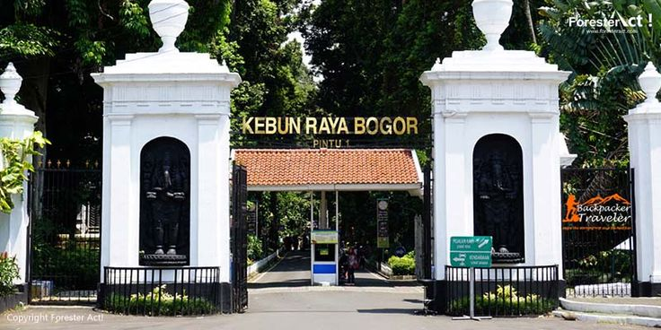
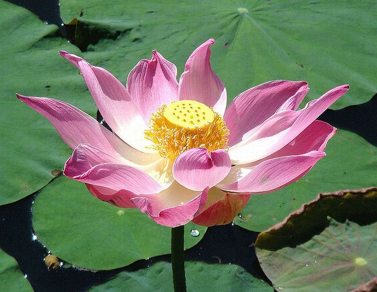

1. KEBUN RAYA BOGOR (S'LANDS PLANTENTUIN)

Kebun Raya Bogor berada di bawah pengelolaan Badan Riset dan Inovasi Nasional (BRIN), setelah sebelumnya diasuh oleh Lembaga Ilmu Pengetahuan Indonesia (LIPI). Kebun ini mencakup area seluas sekitar 87 hektare dengan 12.531 spesimen tanaman hidup, yang terbagi dalam 3.228 jenis, 1.219 marga, dan 214 suku. Koleksi ini berasal dari berbagai kawasan tropis dunia, mulai dari Asia Tenggara hingga Afrika dan Amerika Latin. Kebun ini memegang peran strategis sebagai pusat konservasi tumbuhan ex situ, yakni pelestarian flora yang dilakukan di luar habitat aslinya. Kebun Raya Bogor bukan hanya sekadar taman botani, tetapi juga rumah bagi sejumlah landmark bersejarah dan keunikan yang tak ditemukan di tempat lain. Setiap sudutnya menawarkan pesona berbeda yang memadukan keindahan alam, sejarah, dan arsitektur.
Setelah Britania Raya menginvasi Jawa pada tahun 1811, Thomas Stamford Raffles diangkat sebagai Letnan-Gubernur pulau itu dan dia mengambil Istana Buitenzorg sebagai kediamannya. Raffles memiliki minat besar dalam botani, tertarik mengembangkan halaman Istana Bogor menjadi sebuah kebun yang cantik. Dengan bantuan para ahli botani, W. Kent, yang ikut membangun Kew Garden di London, Raffles menyulap halaman istana menjadi taman. Setelah Perjanjian Inggris-Belanda berlaku pada tahun 1814, Belanda mengirimkan kapal berisi para pejabat untuk mengambil alih kembali Hindia Belanda. Di antara mereka adalah ahli botani Belanda-kelahiran Prusia, Caspar Georg Karl Reinwardt, yang diangkat sebagai kepala pertanian, seni, dan sains di tanah koloni. Reinwardt tertarik menyelidiki berbagai tanaman yang digunakan untuk pengobatan. Ia kemudian dikenal sebagai seorang pendiri Herbarium Bogoriense.
Kebun Raya Bogor awalnya merupakan bagian dari "samida" (hutan buatan) yang kira-kira didirikan pada masa Sri Baduga Maharaja (Prabu Siliwangi, 1474-1513) yang memerintah Kerajaan Sunda, sebagaimana tertulis dalam prasasti Batutulis. Hutan ini dibuat untuk melindungi bibit pohon langka. Hutan ini terbengkalai setelah kerajaan Sunda runtuh pada abad ke-16. Perusahaan Hindia Timur Belanda (VOC) tepatnya Gustaaf Willem Baron van Imhoff (tahun 1744) mendirikan sebuah taman dan wastu di lokasi Kebun Raya yang sekarang ada di Buitenzorg (Bogor). Pada 1817, C.G.K. Reindwart mengembangkan halaman belakang istana menjadi sebuah kebun yang bernama 's Lands Plantentuin te Buitenzorg (Kebun Tanaman Negara di Buitenzorg).
Pada mulanya kebun ini hanya digunakan sebagai kebun percobaan tanaman perkebunan yang akan diperkenalkan di Hindia Belanda. Akan tetapi, ketika Kebun Raya Bogor didirikan, pada kenyatannya menjadi momentum bagi ilmuwan bidang botani di Indonesia untuk membuat suatu wadah penelitian. Sebelum diubah menjadi kebun ilmiah, kawasan ini sebenarnya sudah memiliki nilai ekologis sejak masa Kerajaan Sunda. Saat itu, hutan di wilayah ini dimanfaatkan sebagai lokasi pelestarian benih kayu dan tanaman langka. Namun, setelah jatuh ke tangan Kesultanan Banten, kawasan tersebut sempat terbengkalai hingga akhirnya direvitalisasi oleh pemerintah Hindia Belanda.
Pada tahun 1822 Reinwardt kembali ke Belanda dan digantikan oleh Dr. Carl Ludwig Blume yang melakukan inventarisasi tanaman koleksi yang tumbuh di kebun. Ia juga menyusun katalog kebun yang pertama berhasil dicatat sebanyak 912 jenis (spesies) tanaman serta menjadikan kebun raya sebagai markas Komisi Ilmu Alam. Pelaksanaan pembangunan kebun ini pernah terhenti karena kekurangan dana tetapi kemudian dirintis lagi oleh Johannes Elias Teysmann (1831), seorang ahli kebun istana Gubernur Jenderal Johannes van den Bosch. Dimulai di periode ini, kebun raya berada di pengawasan pengawasan staff Gubernur Jenderal. Dengan dibantu oleh Justus Karl Hasskarl, ia melakukan pengaturan penanaman tanaman koleksi dengan mengelompokkan menurut suku (familia).
Tempat ini adalah kunci masuknya kapitalisme agraris Belanda. Di sini, Belanda melakukan uji coba tanaman komoditas global seperti Kelapa Sawit (1848), Kina, dan Karet. Setelah berhasil dibudidayakan di Bogor, tanaman ini disebarkan melalui sistem Tanam Paksa (Cultuurstelsel), yang menjadi sumber kekayaan utama Kerajaan Belanda dan alasan mengapa mereka bertahan sangat lama di Indonesia untuk mengeruk hasil bumi.
Tidak hanya di Asia Tenggara, ternyata Kebun Raya Bogor juga memberi kontribusi yang signifikan di Asia dalam hal aklimatisasi penanaman pohon kelapa sawit sebelum dikembangkan dan didistribusikan ke banyak industri dan perkebunan.
Kebun Raya Bogor sepanjang perjalanan sejarahnya mempunyai berbagai nama dan julukan, seperti:
's Lands Plantentuin, Syokubutzuer (zaman Pendudukan Jepang), Botanical Garden of Buitenzorg, Botanical Garden of Indonesia, Kebun Gede, Kebun Jodoh.
Direktur yang memimpin:
Era Kolonial Belanda & Inggris
1817-1822: Caspar Georg Karl Reinwardt (Pendiri sekaligus direktur pertama)
1823-1826: Carl Ludwig Blume (Sangat berjasa dalam mendata koleksi tanaman dan memulai publikasi ilmiah tentang flora Nusantara)
1830-1869: Johannes Elias Teijsmann (Ia memimpin KRB selama 39 tahun. Di masanya, Kelapa Sawit pertama diperkenalkan ke Asia)
1869-1880: Rudolph Herman Christiaan Carel Scheffer (Mendirikan sekolah pertanian di Bogor dan memperluas fungsi kebun ke arah pendidikan)
1880-1905: Melchior Treub (Mendirikan "Laboratorium Treub". Ia berhasil membuat KRB menjadi pusat riset botani internasional yang disegani)
1905-1918: Jacob Christiaan Koningsberger (Fokus pada entomologi dan menggabungkan Kebun Raya ke dalam Departemen Pertanian)
1918-1932: Willem Marius Docters van Leeuwen (Fokus pada ekologi dan biologi bunga)
1932-1943: Hermann Ernst Wolff von Wülfing (Memimpin hingga masa jatuhnya Belanda ke tangan Jepang)
Era Pendudukan Jepang
1943-1945: Nakai Takenoshin (Seorang ahli botani Jepang. Di masa ini nama KRB berubah menjadi "Syokubutzuer". Ia berjasa melindungi koleksi KRB agar tidak rusak akibat perang)
Era Transisi (NICA & Pasca-Kemerdekaan)
1948-1951: Dirk Fok van Slooten (Direktur Belanda terakhir sebelum diserahkan sepenuhnya ke pemerintah Indonesia)
Era Indonesia
1951-1959: Kusnoto Setyodiwirjo (Direktur pertama asal Indonesia. Ia berperan besar dalam nasionalisasi lembaga riset)
1959-1969: Soedjana Kassan
1969-1981: Didin Sastrapradja
1981-1983: Made Sri Prana
1983-1987: Usep Sutisna
1987-1990: Sampurno Kadarsan
1990-1997: Suhirman
1997-2002: Dedi Darnaedi
2002-2008: Irawati (Direktur perempuan pertama)
2008-2013: Mustaid Siregar
2013-2019: Didik Widyatmoko
2019-2021: R. Hendrian
2022-Sekarang: Sukma Surya Kusuma (Plt. Kepala Kebun Raya Bogor)
Pada 16 Mei 2006 memperingati 189 Kebun Raya Bogor yang dimeriahkan dengan acara "ASEAN-China Workshop Botanical Garden on Management and Plant Conservation". Selain Tiongkok, kegiatan ini diikuti oleh negara anggota ASEAN seperti Malaysia, Singapura, Brunei Darussalam, Filipina, Laos, Kamboja, Thailand, Myanmar, dan Vietnam. Lokakarya itu bertujuan untuk meningkatkan kerja sama di bidang perkebunan dan konservasi tumbuhan di kawasan ASEAN-Tiongkok.
Puncak acara peringatan ulang tahun ditandai dengan penanaman bibit pohon oleh sepuluh Menteri Lingkungan Hidup ASEAN yang hadir dalam rangka acara "ASEAN Environmental Year" di Indonesia.

Salah satu sudut koleksi tanaman di Kebun Raya Bogor (Buitenzorg).